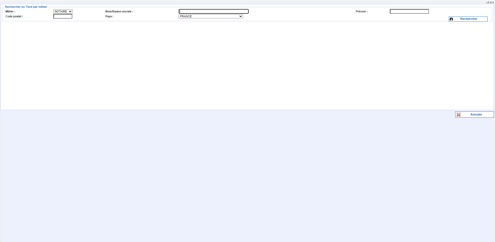
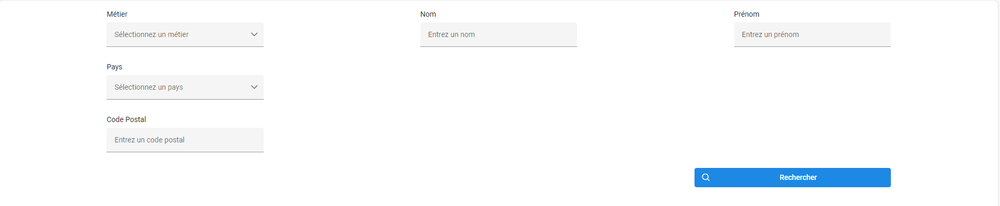
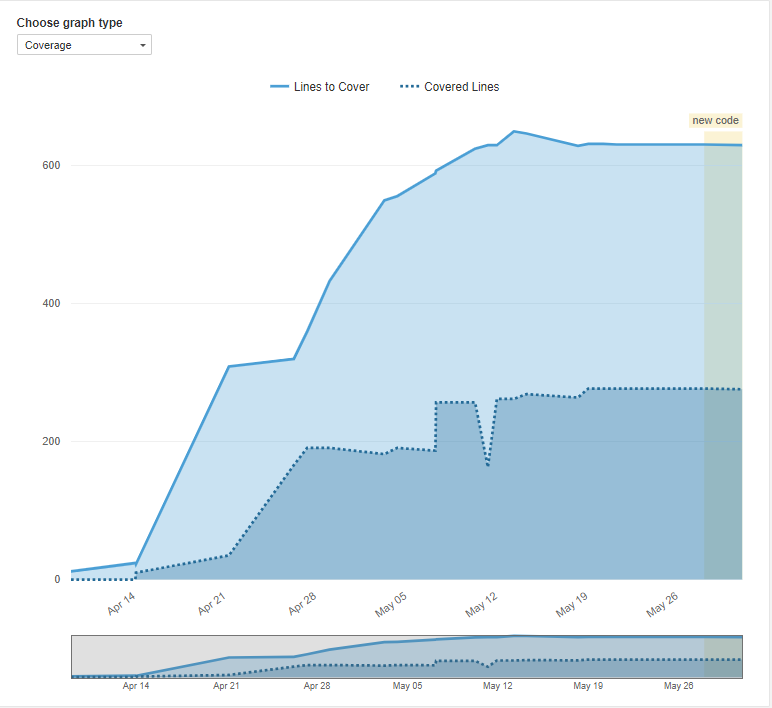
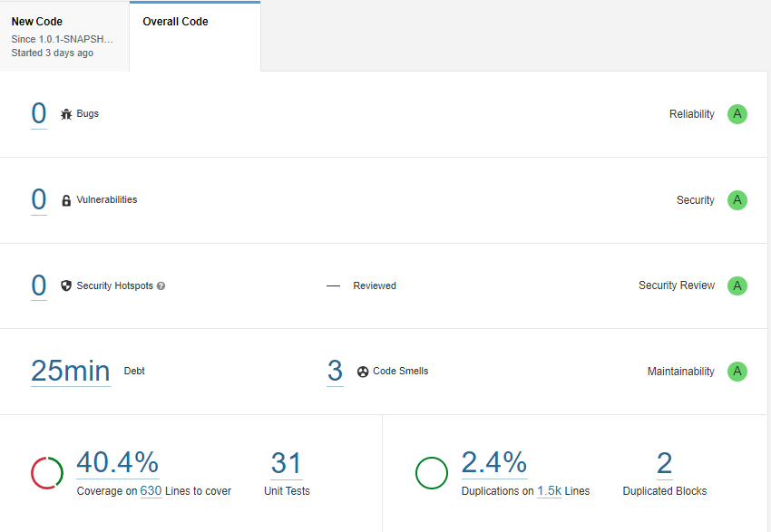
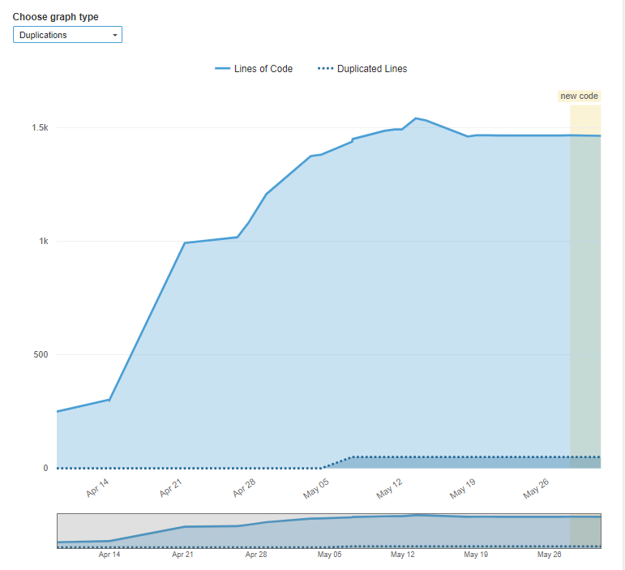
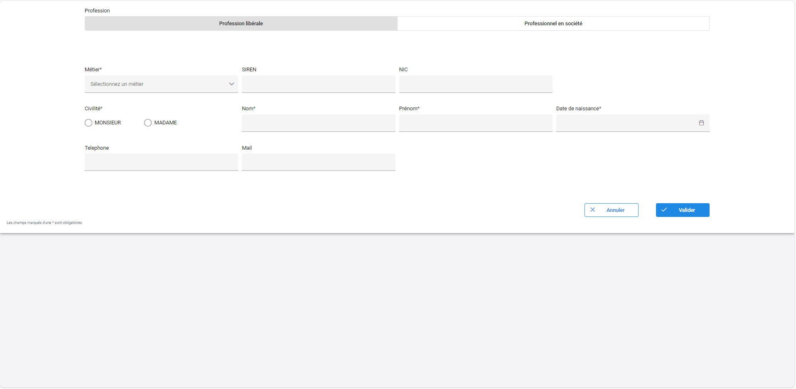
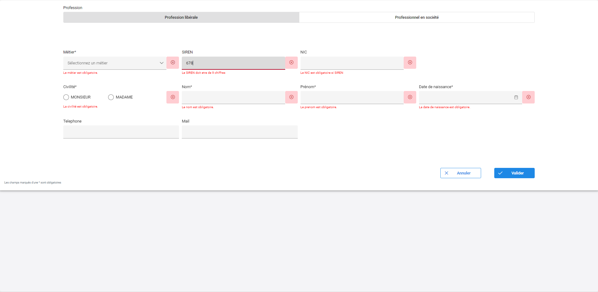

J'ai eu l'occasion de réaliser, à partir du 8 avril 2024, un stage de 10 semaines en tant que développeur à la DSI de la BRED à Paris, dans l'équipe banque de détail. Ma mission était de migrer une application Struts vers une application Angular/Spring. Ce stage m'a permis de consolider mes compétences de développeur, en particulier dans les deux domaines suivants : réaliser un développement d'application et collaborer au sein d'une équipe informatique. Et je vais vous expliquer pourquoi.
I. REALISER UN DEVELOPPEMENT D'APPLICATION
Comme ma mission était de migrer une application, j'ai commencé par utiliser l'application Struts pour me permettre de mieux comprendre et intégrer les fonctionnalités que j'aurais à créer.

J'ai ensuite pu commencer en local à créer des maquettes avec les pages principales de mon application Angular et à les montrer au reste de l'équipe pour avoir des retours. Grâce à ces maquettes, j'ai pu modifier l'IHM (suppression d'informations inutiles, ajout de fonctionnalités comme un champ de recherche dans le tableau, des messages d'erreur plus explicites, et des modifications des enchaînements d'écrans).

J'ai ensuite pu créer réellement les fonctionnalités de l'application grâce à l'appel des Business Services par le côté Java Spring de mon application. J'ai réalisé les tests unitaires sur la partie Java afin de remplir les critères de SonarQube, qui fait partie des jobs Jenkins.



Grâce à la complétion des critères SonarQube, j'ai pu déployer mon application dans l'environnement de développement et de recette. J'ai ensuite réalisé des stories pour tester les fonctionnalités de mon application avant de la présenter à l'équipe UX. Après ma présentation, l'équipe UX m'a donné des pistes pour améliorer mon application (améliorations que j'ai réalisées). J'ai ensuite pu demander le recettage de mon application par la testeuse de ma squad. Une fois les retours du recettage corrigés, j'ai pu réaliser une demande de mise en production.
Pendant les temps de retour sur mon application (équipe UX, recettage), j'ai pu prendre en charge des tickets sur Jira. J'ai donc réalisé des corrections de bugs et des améliorations d'application, comme une erreur qui passait un try-catch sans remonter à cause d'un mauvais type, la non-mise à jour d'éléments dans le DOM après l'upload d'un fichier, la mise en place de messages en toast pour les erreurs, et le passage de la connexion d'une application en OAuth2.
Donc, cette expérience m'a beaucoup apporté dans les différents aspects de la capacité à réaliser une application.
II. COLLABORER AU SEIN D'UNE EQUIPE INFORMATIQUE
L'équipe dans laquelle j'ai réalisé mon stage est une équipe de 13 personnes réparties en 3 squads qui travaillent sur des projets différents. Cette équipe fait partie de la DSI de la BRED, qui compte plus de 300 personnes. La squad était composée de différents profils : un PO, des développeurs Cobol, des développeurs Java (Struts), Angular/Java, et des testeurs. La DSI travaille aussi avec BRED IT, qui est une filiale située à Bangkok, et les équipes UX situées au siège social à Paris.
Cela m'a permis de travailler en équipe lorsque j'avais besoin d'aide pour obtenir des informations, des conseils, ou pour demander la réalisation de tâches qui ne m'étaient pas demandées, comme le recettage. Mais aussi de travailler avec des personnes extérieures à l'équipe, comme lors d'une présentation à l'équipe UX ou des demandes de changement dans des Business Services à BRED IT.
J'ai aussi pu découvrir le travail en méthode agile en entreprise en réalisant, au sein de l'équipe, un peu plus de 3 sprints de 3 semaines. J'ai donc participé aux réunions de début de sprint, d'affinage, de fin de sprint et aux daily meetings. Lors du dernier sprint, l'équipe m'a permis d'animer la rétrospective du sprint.
J'ai aussi pu travailler sur des tâches qui n'étaient pas liées à mon application à la fin de mon stage, comme la mise en place de la connexion OAuth2 sur d'autres applications, la mise en place de messages en toast pour les erreurs, la résolution de bugs sur des applications existantes ou même des études de la charge de travail de futures fonctionnalités. Cela m'a vraiment permis de travailler avec l'équipe.
Malgré ces points, je restais un stagiaire de 2ème année de BUT sur un stage de 10 semaines dans une grande entreprise avec des plans déjà définis. Il était donc difficile de guider la conduite du changement informatique au sein de l'organisation et d'accompagner le management d'un projet informatique.
Comparaison de l'application Struts et application Angular
Page de creation


Style champ requis pour la creation

